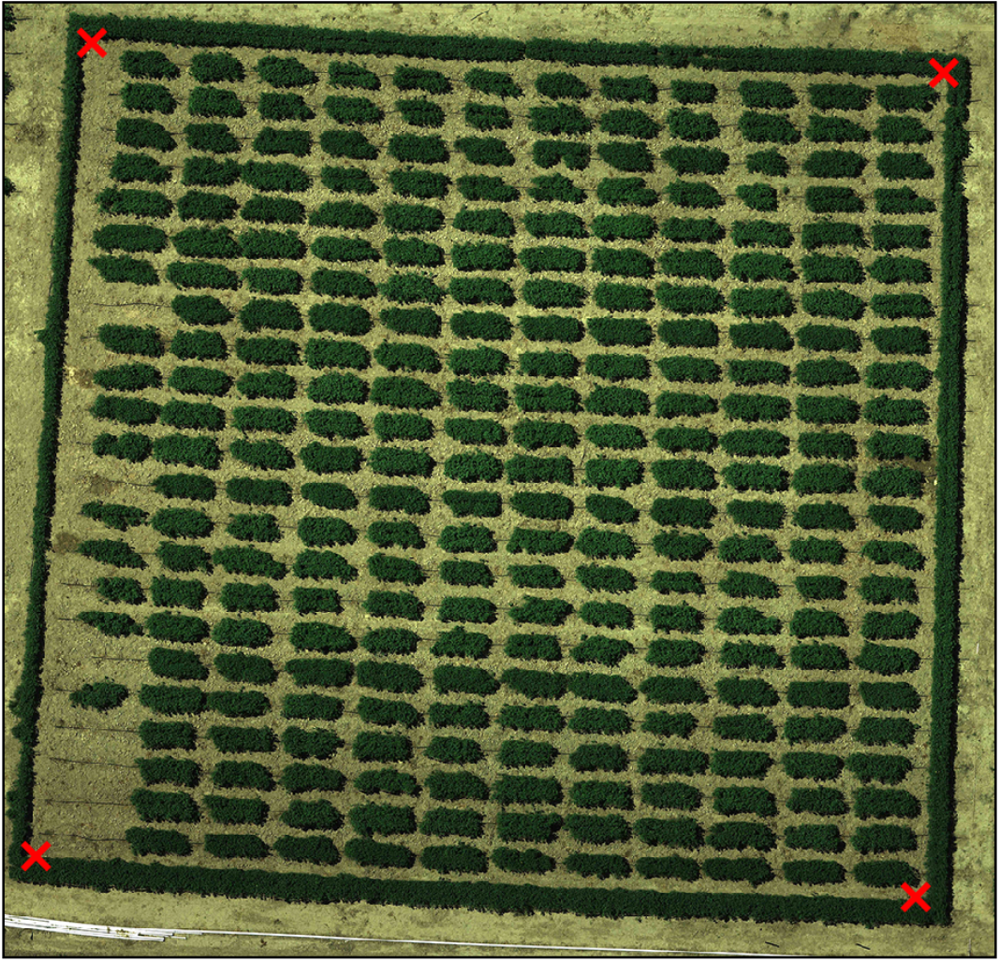
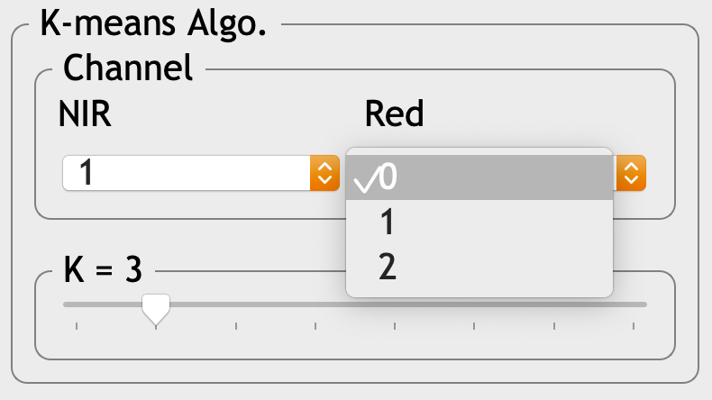
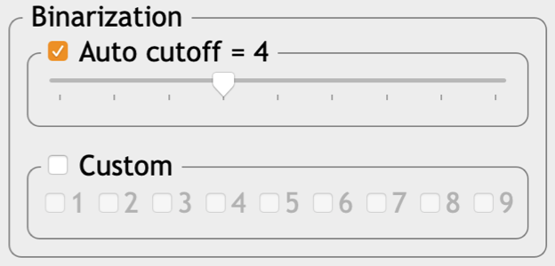
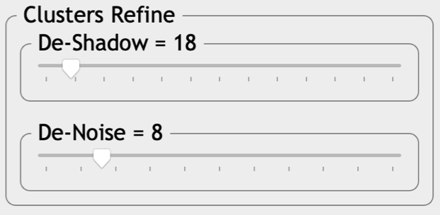
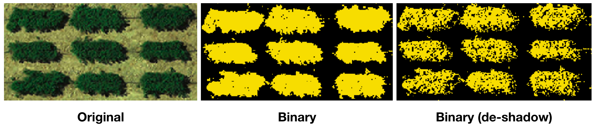
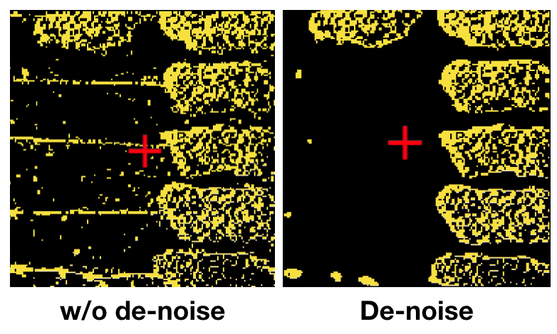
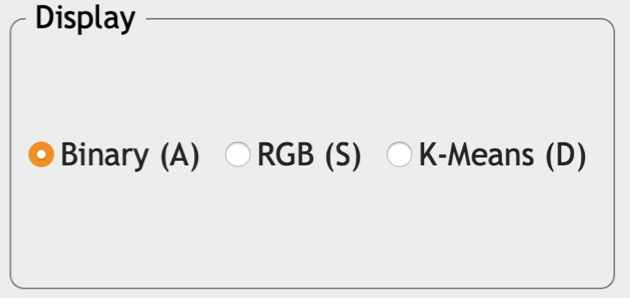
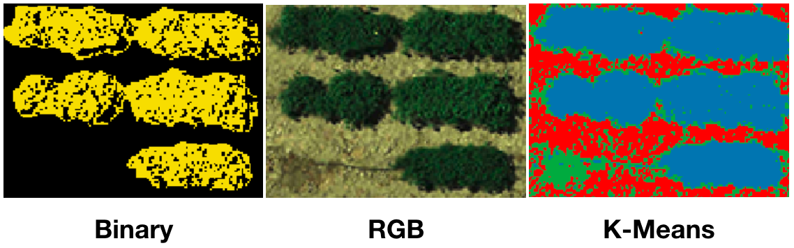
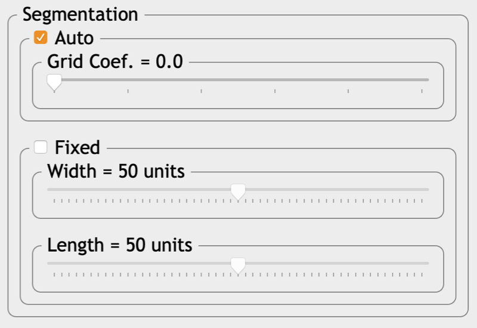
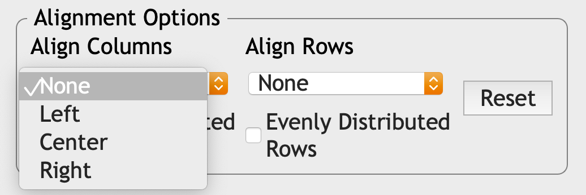

Chapter 4 Interface and Usage
4.1 Load data

GRID only requires an image file to function normally. However, in order to improve the segmentation result, providing a map file could be helpful for GRID to know better about the field layout.
If users don’t have suitable image, it’s also possible to learn GRID by choosing “Demo files”.
More information about file format can be found here
Map files
- For the map file, no header or row name needed. It can be a simple tab-delimited text file or comma-separated values (CSV) file.
| plot_1 | plot_6 | plot_11 | plot_16 |
| plot_2 | plot_7 | plot_12 | plot_17 |
| plot_3 | plot_8 | plot_13 | plot_18 |
| plot_4 | plot_9 | plot_14 | plot_19 |
| plot_5 | plot_10 | plot_15 | plot_20 |
The values arranged in this file are based on users’ field layout. For example, if the field has 4 rows and 5 columns of plots, then the file should also have 4 rows and 5 columns.
Values in the map file are plot IDs, which have to be unique.
Image files
- GRID currently only supports images encoded in “uint8”. Other encoding may be problematic. There’s no limitation on the number of bands.
4.2 Crop Images

- There’re two magnification levels available for the mouse cursor. Users can switch the level by right-clicking on any place of the image.

- Left-clicking on the image to define four corners of the sub-image you want to analyze on. The fifth click will reset all the red marks

4.3 Plots Extraction

- This is a panel to define vegetation plots (i.e., area of interest, AOI). The yellow area is the one that will be selected, whereas pixels colored as black will be excluded from the following calculation.

GRID will run a K-mean clustering algorithm to extract the vegetation areas.
Only bands of red and near-infrared red (NIR) will be used in K-mean clustering.
Selected K will tell GRID that how many clusters are expected in the image.

- To assign which clusters as AOI, users can either let the program decide automatically or select them manually.

- De-shadow: This feature allows users to remove any pixel that is darker than the certain level.

- De-noise: This is a feature to remove noise signals existing in the background or canopy.


- Display mode: Users may verify the results by switching different view modes. “RGB” shows the original image; “Binary” is a mode showing the selected area (yellow) and the excluded part (black); And “K mean” can show the clustering results by different colors.


4.4 Set Up Central Points

After defining the selected areas. GRID will automatically detect the center of each plot. If a map file is provided, only the specified number of plots will be detected. Users can also add or remove any missed or falsely detected center by the manners listed below.
Left-button click: Add a row (or column) of plot centers.
Left-button drag: Move a row (or column) of plot centers.
Right-button click: Remove a row (or column) of plot centers.
4.5 Finalize plot’s boundaries

GRID will detect the border automatically for each plot. Users in this panel can finalize the borders and export the results.

Border detection (auto): Grid coefficient is a way to tune the weights between two strategies: With a smaller coefficient, GRID will tend to explore the adjacent pixels from the center and expand the border as much as possible. Whereas with a larger coefficient, GRID will consider how far the expanded border from the central point. The further the distance is, the less chance GRID will continue to explore the adjacent area.
Border detection (manual): Instead of detecting borders automatically, the size of borders can also be adjusted into a fixed size. It assumes that every plots are in the same size

- Alignment: Rows and columns of plots can be aligned vertically or horizontally. It’s like the way how you arrange objects in Microsofts Word or PowerPoints. GRID also allows users to allocate the plots in the equal distance.

- Output: In this section users can name the prefix for the output files.
Cursor mode (right click to switch between each mode):
Border refine: In this mode, users can refine the individual’s border by left-click dragging
Column-wise adjustment: An entire column can be moved horizontally through left-click dragging
Row-wise adjustment: An entire rows can be moved vertically through left-click dragging